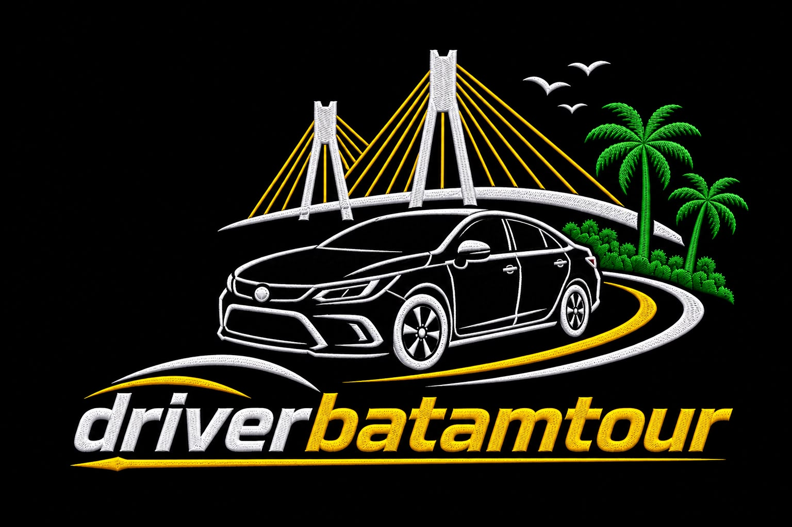
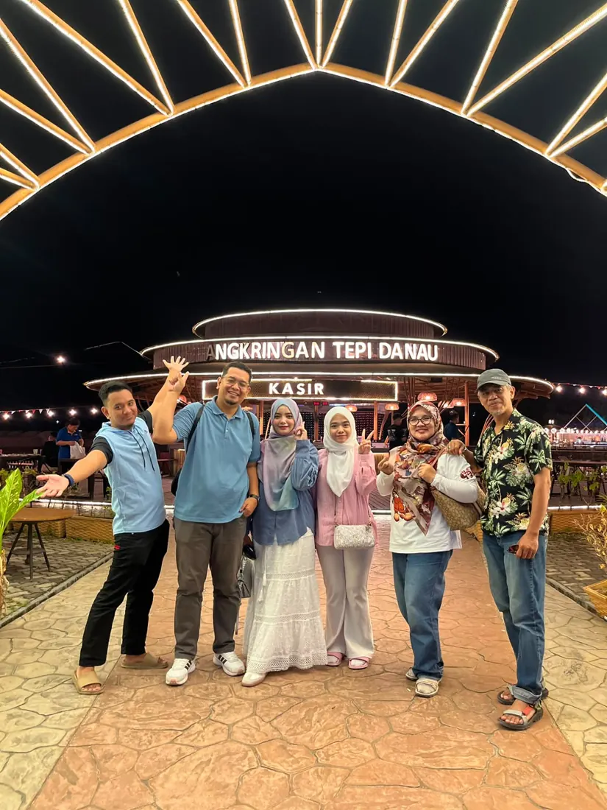
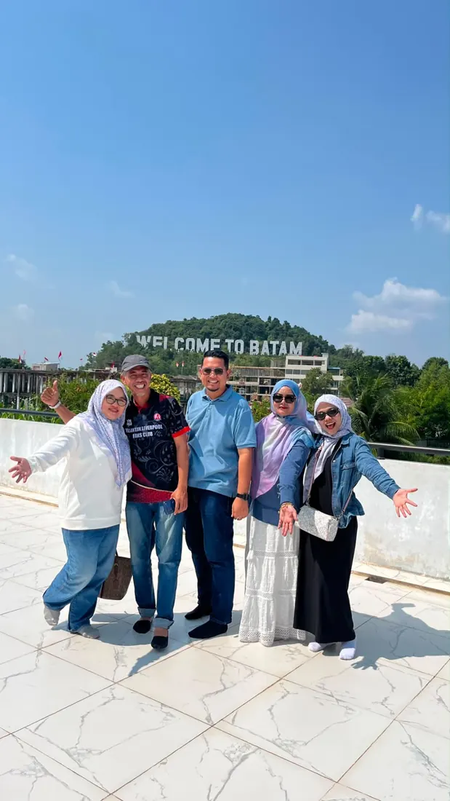
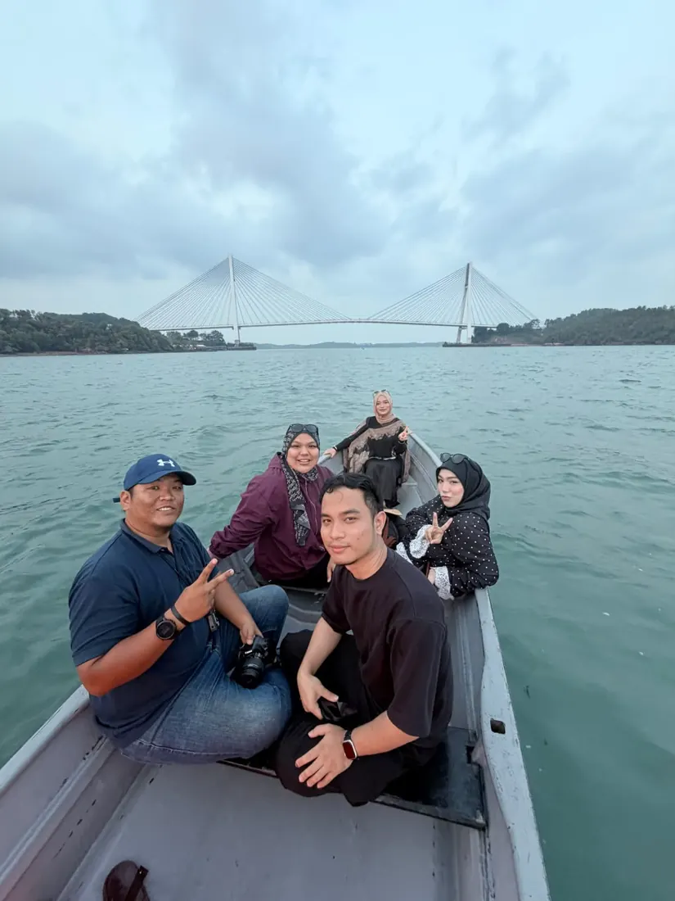

Driver profesional
Berpengalaman, ramah, dan paham rute serta titik wisata di Batam.

driverbatamtourDriver profesional dan ramah, siap standby 24 jam untuk keluarga, pasangan, dan rombongan dari Indonesia, Malaysia, maupun Singapura.

Berpengalaman, ramah, dan paham rute serta titik wisata di Batam.
Standby kapan pun kamu butuh, termasuk perjalanan pagi buta atau malam hari.
Jemput di bandara atau pelabuhan, lalu antar ke hotel atau tujuan wisata.
Nyaman untuk keluarga, pasangan, maupun rombongan, termasuk tamu dari Malaysia dan Singapura.
Pilih sesuai jumlah penumpang dan jenis perjalananmu.

Van putih besar
12 penumpangMPV silver
7 penumpangMPV putih
7 penumpangMPV merah
7 penumpangMPV hitam
7 penumpangSUV merah
5 penumpangHatchback kuning
5 penumpangTempat favorit yang sering kami antar. Tekan nama tempat untuk membuka Google Maps.

Jembatan megah yang menjadi ikon Batam. Cocok untuk foto dan menikmati matahari terbenam.
Buka di Google Maps →
Titik pandang dengan pemandangan laut dan perbukitan Batam.
Buka di Google Maps →
Masjid dengan arsitektur modern yang ikonik dan mudah difoto.
Buka di Google Maps →
Kebun binatang yang seru untuk keluarga dan anak-anak.
Buka di Google Maps →
Taman bertema dinosaurus di tengah hutan, cocok untuk anak-anak.
Buka di Google Maps →
Bangunan bergaya tradisional untuk mengenal budaya Batam.
Buka di Google Maps →Pelabuhan feri ke dan dari Singapura. Kami antar jemput tamu sesuai jadwal kapal.
Buka di Google Maps →Pasar keropok dan oleh-oleh khas Batam. Cocok untuk belanja buah tangan.
Buka di Google Maps →Vihara untuk dikunjungi dan mengenal keberagaman budaya di Batam.
Buka di Google Maps →Wisata seru dengan jetski, ATV, go-kart, dan paintball.
Buka di Google Maps →Destinasi wisata yang seru untuk keluarga dan anak muda.
Buka di Google Maps →
Nongkrong dan makan malam di tepi danau, suasananya tenang.
Buka di Google Maps →
Beach club dengan pasir pink di tepi laut. Tempat makan dan nongkrong favorit tamu kami.
Buka di Google Maps →Kafe santai untuk minum dan berbual sebelum atau sesudah jalan-jalan.
Buka di Google Maps →Seafood segar dan ikan bakar di tepi laut. Kami bisa rekomendasikan tempat sesuai seleramu.
Buka di Google Maps →Otak-otak dan jajanan khas Batam, cocok untuk oleh-oleh atau camilan.
Buka di Google Maps →Contoh rencana perjalanan. Bisa disesuaikan dengan keinginanmu.
Dari pusat kota sampai pelabuhan, kami antar ke semua kawasan di Batam.
Posisi kawasan dan destinasi secara garis besar.
Peta ilustrasi, bukan skala asli. Untuk rute tepat, buka Google Maps dari tiap destinasi.
Beberapa perjalanan bersama tamu kami di Batam.



Harga mobil beserta driver, per hari.
Harga start, per hari. Detail armada dan kapasitas dikonfirmasi saat booking.
Jawaban singkat untuk hal yang paling sering ditanyakan.
Mulai dari Rp 700.000 per hari, sudah termasuk driver. Harga akhir tergantung jenis mobil dan jumlah penumpang.
Bisa. Kami jemput di bandara atau pelabuhan, termasuk tamu yang datang dari Singapura atau Malaysia lewat feri.
Ya, kami beroperasi 24 jam. Hubungi kami lewat WhatsApp untuk mengatur jadwal.
Isi form pemesanan di halaman ini atau chat WhatsApp. Kami konfirmasi jadwal dan harga, lalu pembayaran lewat transfer bank.
Isi data perjalananmu. Pesan akan dibuka di WhatsApp dengan isian sudah terisi, tinggal kirim.
Dua cara mudah untuk memesan dan membayar.
Kirim tanggal, jumlah orang, dan tujuan perjalananmu melalui salah satu nomor WhatsApp di atas.
Kami konfirmasi ketersediaan mobil dan driver, lalu harga final untuk perjalananmu.
Setelah pembayaran terkonfirmasi, driver siap standby sesuai jadwalmu.
Batam lebih seru kalau perjalananmu nyaman. Hubungi kami sekarang.